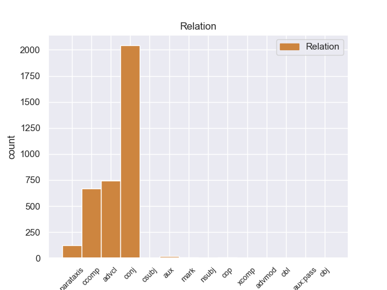
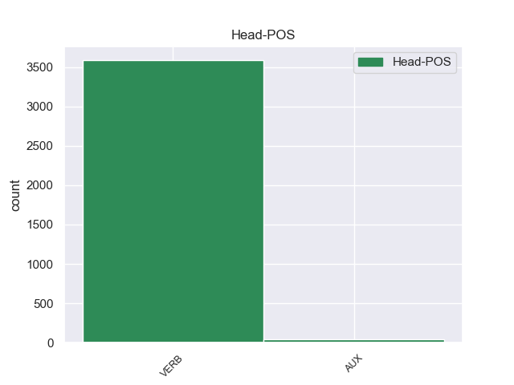

Distribution of features within this leaf



Agreement Rules sorted by frequency.
- When the dependent token is the conjunct(conj) of the head token,
1 Para _ _ _ _ 0 _ _ _
2 poder _ _ _ _ 0 _ _ _
3 estudiar _ _ _ _ 0 _ _ _
4 los _ _ _ _ 0 _ _ _
5 mejor _ _ _ _ 0 _ _ _
6 , _ _ _ _ 0 _ _ _
7 Ghazali _ _ _ _ 0 _ _ _
8 introdujo introdujar VERB _ Mood=Ind|Number=Sing|Person=3|Tense=Past|VerbForm=Fin 0 _ _ _
9 varios _ _ _ _ 0 _ _ _
10 peces _ _ _ _ 0 _ _ _
11 en _ _ _ _ 0 _ _ _
12 un _ _ _ _ 0 _ _ _
13 tanque _ _ _ _ 0 _ _ _
14 y _ _ _ _ 0 _ _ _
15 , _ _ _ _ 0 _ _ _
16 tras _ _ _ _ 0 _ _ _
17 varias _ _ _ _ 0 _ _ _
18 semanas _ _ _ _ 0 _ _ _
19 de _ _ _ _ 0 _ _ _
20 aclimatación _ _ _ _ 0 _ _ _
21 , _ _ _ _ 0 _ _ _
22 comenzó comenzar VERB _ Mood=Ind|Number=Sing|Person=3|Tense=Past|VerbForm=Fin 8 conj _ _
23 a _ _ _ _ 0 _ _ _
24 grabar _ _ _ _ 0 _ _ _
25 sus _ _ _ _ 0 _ _ _
26 sonidos _ _ _ _ 0 _ _ _
27 , _ _ _ _ 0 _ _ _
28 según _ _ _ _ 0 _ _ _
29 recoge _ _ _ _ 0 _ _ _
30 el _ _ _ _ 0 _ _ _
31 periódico _ _ _ _ 0 _ _ _
32 New _ _ _ _ 0 _ _ _
33 Zealand _ _ _ _ 0 _ _ _
34 Herald _ _ _ _ 0 _ _ _
35 . _ _ _ _ 0 _ _ _
1 Una _ _ _ _ 0 _ _ _
2 vez _ _ _ _ 0 _ _ _
3 que _ _ _ _ 0 _ _ _
4 el _ _ _ _ 0 _ _ _
5 Hijo _ _ _ _ 0 _ _ _
6 de _ _ _ _ 0 _ _ _
7 Krypton _ _ _ _ 0 _ _ _
8 suelta sueltar VERB _ Mood=Ind|Number=Sing|Person=3|Tense=Pres|VerbForm=Fin 13 advcl _ _
9 el _ _ _ _ 0 _ _ _
10 misil _ _ _ _ 0 _ _ _
11 , _ _ _ _ 0 _ _ _
12 este _ _ _ _ 0 _ _ _
13 intenta intentar VERB _ Mood=Ind|Number=Sing|Person=3|Tense=Pres|VerbForm=Fin 0 _ _ _
14 huir _ _ _ _ 0 _ _ _
15 de _ _ _ _ 0 _ _ _
16 el _ _ _ _ 0 _ _ _
17 lugar _ _ _ _ 0 _ _ _
18 pero _ _ _ _ 0 _ _ _
19 es _ _ _ _ 0 _ _ _
20 atrapado _ _ _ _ 0 _ _ _
21 en _ _ _ _ 0 _ _ _
22 la _ _ _ _ 0 _ _ _
23 explosión _ _ _ _ 0 _ _ _
24 . _ _ _ _ 0 _ _ _
1 El _ _ _ _ 0 _ _ _
2 representante _ _ _ _ 0 _ _ _
3 de _ _ _ _ 0 _ _ _
4 el _ _ _ _ 0 _ _ _
5 Frente _ _ _ _ 0 _ _ _
6 Cívico _ _ _ _ 0 _ _ _
7 en _ _ _ _ 0 _ _ _
8 Tribunal _ _ _ _ 0 _ _ _
9 de _ _ _ _ 0 _ _ _
10 Cuentas _ _ _ _ 0 _ _ _
11 de _ _ _ _ 0 _ _ _
12 la _ _ _ _ 0 _ _ _
13 provincia _ _ _ _ 0 _ _ _
14 de _ _ _ _ 0 _ _ _
15 Córdoba _ _ _ _ 0 _ _ _
16 , _ _ _ _ 0 _ _ _
17 José _ _ _ _ 0 _ _ _
18 Medina _ _ _ _ 0 _ _ _
19 , _ _ _ _ 0 _ _ _
20 denunció denunciar VERB _ Mood=Ind|Number=Sing|Person=3|Tense=Past|VerbForm=Fin 0 _ _ _
21 que _ _ _ _ 0 _ _ _
22 el _ _ _ _ 0 _ _ _
23 gobierno _ _ _ _ 0 _ _ _
24 de _ _ _ _ 0 _ _ _
25 Schiaretti _ _ _ _ 0 _ _ _
26 pidió pidiar VERB _ Mood=Ind|Number=Sing|Person=3|Tense=Past|VerbForm=Fin 20 ccomp _ _
27 autorización _ _ _ _ 0 _ _ _
28 para _ _ _ _ 0 _ _ _
29 realizar _ _ _ _ 0 _ _ _
30 reparaciones _ _ _ _ 0 _ _ _
31 en _ _ _ _ 0 _ _ _
32 la _ _ _ _ 0 _ _ _
33 Casa _ _ _ _ 0 _ _ _
34 de _ _ _ _ 0 _ _ _
35 las _ _ _ _ 0 _ _ _
36 Tejas _ _ _ _ 0 _ _ _
37 por _ _ _ _ 0 _ _ _
38 más _ _ _ _ 0 _ _ _
39 de _ _ _ _ 0 _ _ _
40 un _ _ _ _ 0 _ _ _
41 millón _ _ _ _ 0 _ _ _
42 de _ _ _ _ 0 _ _ _
43 pesos _ _ _ _ 0 _ _ _
44 el _ _ _ _ 0 _ _ _
45 pasado _ _ _ _ 0 _ _ _
46 19 _ _ _ _ 0 _ _ _
47 de _ _ _ _ 0 _ _ _
48 octubre _ _ _ _ 0 _ _ _
49 , _ _ _ _ 0 _ _ _
50 cuando _ _ _ _ 0 _ _ _
51 ya _ _ _ _ 0 _ _ _
52 estaba _ _ _ _ 0 _ _ _
53 la _ _ _ _ 0 _ _ _
54 decisión _ _ _ _ 0 _ _ _
55 de _ _ _ _ 0 _ _ _
56 demoler _ _ _ _ 0 _ _ _
57 el _ _ _ _ 0 _ _ _
58 edificio _ _ _ _ 0 _ _ _
59 . _ _ _ _ 0 _ _ _
1 La _ _ _ _ 0 _ _ _
2 primera _ _ _ _ 0 _ _ _
3 vez _ _ _ _ 0 _ _ _
4 , _ _ _ _ 0 _ _ _
5 tenía tener VERB _ Mood=Ind|Number=Sing|Person=3|Tense=Imp|VerbForm=Fin 0 _ _ _
6 un _ _ _ _ 0 _ _ _
7 presupuesto _ _ _ _ 0 _ _ _
8 de _ _ _ _ 0 _ _ _
9 700 _ _ _ _ 0 _ _ _
10 € _ _ _ _ 0 _ _ _
11 en _ _ _ _ 0 _ _ _
12 el _ _ _ _ 0 _ _ _
13 servicio _ _ _ _ 0 _ _ _
14 oficial _ _ _ _ 0 _ _ _
15 ( _ _ _ _ 0 _ _ _
16 te _ _ _ _ 0 _ _ _
17 lo _ _ _ _ 0 _ _ _
18 cambio cambiar VERB _ Mood=Ind|Number=Sing|Person=3|Tense=Past|VerbForm=Fin 5 parataxis _ _
19 todo _ _ _ _ 0 _ _ _
20 y _ _ _ _ 0 _ _ _
21 soluciono _ _ _ _ 0 _ _ _
22 el _ _ _ _ 0 _ _ _
23 problema _ _ _ _ 0 _ _ _
24 ) _ _ _ _ 0 _ _ _
25 , _ _ _ _ 0 _ _ _
26 y _ _ _ _ 0 _ _ _
27 en _ _ _ _ 0 _ _ _
28 Pinauto _ _ _ _ 0 _ _ _
29 me _ _ _ _ 0 _ _ _
30 lo _ _ _ _ 0 _ _ _
31 solucionaron _ _ _ _ 0 _ _ _
32 por _ _ _ _ 0 _ _ _
33 unos _ _ _ _ 0 _ _ _
34 200 _ _ _ _ 0 _ _ _
35 € _ _ _ _ 0 _ _ _
36 , _ _ _ _ 0 _ _ _
37 cambiando _ _ _ _ 0 _ _ _
38 sólo _ _ _ _ 0 _ _ _
39 lo _ _ _ _ 0 _ _ _
40 necesario _ _ _ _ 0 _ _ _
41 . _ _ _ _ 0 _ _ _
1 Sólo _ _ _ _ 0 _ _ _
2 CiU _ _ _ _ 0 _ _ _
3 ha _ _ _ _ 0 _ _ _
4 dicho _ _ _ _ 0 _ _ _
5 que _ _ _ _ 0 _ _ _
6 la _ _ _ _ 0 _ _ _
7 moción _ _ _ _ 0 _ _ _
8 de _ _ _ _ 0 _ _ _
9 el _ _ _ _ 0 _ _ _
10 PP _ _ _ _ 0 _ _ _
11 era _ _ _ _ 0 _ _ _
12 " _ _ _ _ 0 _ _ _
13 oportuna _ _ _ _ 0 _ _ _
14 " _ _ _ _ 0 _ _ _
15 pero _ _ _ _ 0 _ _ _
16 se _ _ _ _ 0 _ _ _
17 ha haber AUX _ Mood=Ind|Number=Sing|Person=3|Tense=Pres|VerbForm=Fin 18 aux _ _
18 abstenido abstenir VERB _ Mood=Ind|Number=Sing|Person=3|Tense=Imp|VerbForm=Fin 0 _ _ _
19 " _ _ _ _ 0 _ _ _
20 en _ _ _ _ 0 _ _ _
21 coherencia _ _ _ _ 0 _ _ _
22 " _ _ _ _ 0 _ _ _
23 con _ _ _ _ 0 _ _ _
24 su _ _ _ _ 0 _ _ _
25 propia _ _ _ _ 0 _ _ _
26 propuesta _ _ _ _ 0 _ _ _
27 de _ _ _ _ 0 _ _ _
28 Pacto _ _ _ _ 0 _ _ _
29 de _ _ _ _ 0 _ _ _
30 Estado _ _ _ _ 0 _ _ _
31 contra _ _ _ _ 0 _ _ _
32 la _ _ _ _ 0 _ _ _
33 crisis _ _ _ _ 0 _ _ _
34 presentada _ _ _ _ 0 _ _ _
35 ayer _ _ _ _ 0 _ _ _
36 . _ _ _ _ 0 _ _ _
1 Fue ser VERB _ Mood=Ind|Number=Sing|Person=3|Tense=Past|VerbForm=Fin 8 cop _ _
2 en _ _ _ _ 0 _ _ _
3 mayo _ _ _ _ 0 _ _ _
4 de _ _ _ _ 0 _ _ _
5 ese _ _ _ _ 0 _ _ _
6 año _ _ _ _ 0 _ _ _
7 cuando _ _ _ _ 0 _ _ _
8 estrenó estrenar VERB _ Mood=Ind|Number=Sing|Person=3|Tense=Past|VerbForm=Fin 0 _ _ _
9 la _ _ _ _ 0 _ _ _
10 práctica _ _ _ _ 0 _ _ _
11 de _ _ _ _ 0 _ _ _
12 cirugía _ _ _ _ 0 _ _ _
13 de _ _ _ _ 0 _ _ _
14 revascularización _ _ _ _ 0 _ _ _
15 miocárdica _ _ _ _ 0 _ _ _
16 . _ _ _ _ 0 _ _ _
1 Aparte _ _ _ _ 0 _ _ _
2 de _ _ _ _ 0 _ _ _
3 lo _ _ _ _ 0 _ _ _
4 anterior _ _ _ _ 0 _ _ _
5 , _ _ _ _ 0 _ _ _
6 era _ _ _ _ 0 _ _ _
7 muy _ _ _ _ 0 _ _ _
8 frecuente _ _ _ _ 0 _ _ _
9 la _ _ _ _ 0 _ _ _
10 aparición _ _ _ _ 0 _ _ _
11 de _ _ _ _ 0 _ _ _
12 cobre _ _ _ _ 0 _ _ _
13 nativo _ _ _ _ 0 _ _ _
14 , _ _ _ _ 0 _ _ _
15 es ser AUX _ Mood=Ind|Number=Sing|Person=3|Tense=Pres|VerbForm=Fin 20 mark _ _
16 decir _ _ _ _ 0 _ _ _
17 , _ _ _ _ 0 _ _ _
18 que _ _ _ _ 0 _ _ _
19 se _ _ _ _ 0 _ _ _
20 encuentra encontrar VERB _ Mood=Ind|Number=Sing|Person=3|Tense=Pres|VerbForm=Fin 0 _ _ _
21 en _ _ _ _ 0 _ _ _
22 estado _ _ _ _ 0 _ _ _
23 metálico _ _ _ _ 0 _ _ _
24 natural _ _ _ _ 0 _ _ _
25 ; _ _ _ _ 0 _ _ _
1 Si _ _ _ _ 0 _ _ _
2 usted usted PRON _ Mood=Ind|Number=Plur|Person=1|Tense=Pres|VerbForm=Fin 3 nsubj _ _
3 tiene tener VERB _ Mood=Ind|Number=Sing|Person=3|Tense=Pres|VerbForm=Fin 0 _ _ _
4 cuenta _ _ _ _ 0 _ _ _
5 en _ _ _ _ 0 _ _ _
6 alguno _ _ _ _ 0 _ _ _
7 de _ _ _ _ 0 _ _ _
8 los _ _ _ _ 0 _ _ _
9 servicios _ _ _ _ 0 _ _ _
10 de _ _ _ _ 0 _ _ _
11 redes _ _ _ _ 0 _ _ _
12 sociales _ _ _ _ 0 _ _ _
13 o _ _ _ _ 0 _ _ _
14 marcadores _ _ _ _ 0 _ _ _
15 sociales _ _ _ _ 0 _ _ _
16 mostrados _ _ _ _ 0 _ _ _
17 abajo _ _ _ _ 0 _ _ _
18 , _ _ _ _ 0 _ _ _
19 con _ _ _ _ 0 _ _ _
20 sólo _ _ _ _ 0 _ _ _
21 hacer _ _ _ _ 0 _ _ _
22 click _ _ _ _ 0 _ _ _
23 podrá _ _ _ _ 0 _ _ _
24 guardar _ _ _ _ 0 _ _ _
25 este _ _ _ _ 0 _ _ _
26 artículo _ _ _ _ 0 _ _ _
27 en _ _ _ _ 0 _ _ _
28 su _ _ _ _ 0 _ _ _
29 cuenta _ _ _ _ 0 _ _ _
30 o _ _ _ _ 0 _ _ _
31 en _ _ _ _ 0 _ _ _
32 su _ _ _ _ 0 _ _ _
33 perfil _ _ _ _ 0 _ _ _
34 . _ _ _ _ 0 _ _ _
1 Existe _ _ _ _ 0 _ _ _
2 un _ _ _ _ 0 _ _ _
3 amplio _ _ _ _ 0 _ _ _
4 abanico _ _ _ _ 0 _ _ _
5 de _ _ _ _ 0 _ _ _
6 geometrías _ _ _ _ 0 _ _ _
7 disponibles _ _ _ _ 0 _ _ _
8 , _ _ _ _ 0 _ _ _
9 pero _ _ _ _ 0 _ _ _
10 las _ _ _ _ 0 _ _ _
11 más _ _ _ _ 0 _ _ _
12 usadas _ _ _ _ 0 _ _ _
13 son _ _ _ _ 0 _ _ _
14 las _ _ _ _ 0 _ _ _
15 herramientas _ _ _ _ 0 _ _ _
16 con _ _ _ _ 0 _ _ _
17 perno _ _ _ _ 0 _ _ _
18 fijo _ _ _ _ 0 _ _ _
19 , _ _ _ _ 0 _ _ _
20 que _ _ _ _ 0 _ _ _
21 no _ _ _ _ 0 _ _ _
22 se _ _ _ _ 0 _ _ _
23 mueve _ _ _ _ 0 _ _ _
24 respecto _ _ _ _ 0 _ _ _
25 a _ _ _ _ 0 _ _ _
26 la _ _ _ _ 0 _ _ _
27 sujeción _ _ _ _ 0 _ _ _
28 ( _ _ _ _ 0 _ _ _
29 la _ _ _ _ 0 _ _ _
30 primera _ _ _ _ 0 _ _ _
31 figura _ _ _ _ 0 _ _ _
32 de _ _ _ _ 0 _ _ _
33 la _ _ _ _ 0 _ _ _
34 imagen _ _ _ _ 0 _ _ _
35 ) _ _ _ _ 0 _ _ _
36 , _ _ _ _ 0 _ _ _
37 y _ _ _ _ 0 _ _ _
38 las _ _ _ _ 0 _ _ _
39 herramientas _ _ _ _ 0 _ _ _
40 con _ _ _ _ 0 _ _ _
41 perno _ _ _ _ 0 _ _ _
42 retráctil _ _ _ _ 0 _ _ _
43 ( _ _ _ _ 0 _ _ _
44 segunda _ _ _ _ 0 _ _ _
45 y _ _ _ _ 0 _ _ _
46 tercera _ _ _ _ 0 _ _ _
47 figuras _ _ _ _ 0 _ _ _
48 de _ _ _ _ 0 _ _ _
49 la _ _ _ _ 0 _ _ _
50 imagen _ _ _ _ 0 _ _ _
51 ) _ _ _ _ 0 _ _ _
52 , _ _ _ _ 0 _ _ _
53 que _ _ _ _ 0 _ _ _
54 sí sí ADV _ Mood=Ind|Number=Plur|Person=3|Tense=Pres|VerbForm=Fin 56 advmod _ _
55 que _ _ _ _ 0 _ _ _
56 poseen poseer VERB _ Mood=Ind|Number=Plur|Person=3|Tense=Pres|VerbForm=Fin 0 _ _ _
57 dicho _ _ _ _ 0 _ _ _
58 movimiento _ _ _ _ 0 _ _ _
59 , _ _ _ _ 0 _ _ _
60 acomodándo _ _ _ _ 0 _ _ _
61 se _ _ _ _ 0 _ _ _
62 de _ _ _ _ 0 _ _ _
63 esta _ _ _ _ 0 _ _ _
64 forma _ _ _ _ 0 _ _ _
65 a _ _ _ _ 0 _ _ _
66 las _ _ _ _ 0 _ _ _
67 posibles _ _ _ _ 0 _ _ _
68 variaciones _ _ _ _ 0 _ _ _
69 de _ _ _ _ 0 _ _ _
70 espesor _ _ _ _ 0 _ _ _
71 a _ _ _ _ 0 _ _ _
72 lo _ _ _ _ 0 _ _ _
73 largo _ _ _ _ 0 _ _ _
74 de _ _ _ _ 0 _ _ _
75 la _ _ _ _ 0 _ _ _
76 unión _ _ _ _ 0 _ _ _
77 . _ _ _ _ 0 _ _ _
1 Por _ _ _ _ 0 _ _ _
2 esa _ _ _ _ 0 _ _ _
3 misma _ _ _ _ 0 _ _ _
4 razón _ _ _ _ 0 _ _ _
5 , _ _ _ _ 0 _ _ _
6 era _ _ _ _ 0 _ _ _
7 un _ _ _ _ 0 _ _ _
8 momento _ _ _ _ 0 _ _ _
9 adecuado _ _ _ _ 0 _ _ _
10 para _ _ _ _ 0 _ _ _
11 realizar _ _ _ _ 0 _ _ _
12 chanzas _ _ _ _ 0 _ _ _
13 y _ _ _ _ 0 _ _ _
14 bromas _ _ _ _ 0 _ _ _
15 que _ _ _ _ 0 _ _ _
16 impidieran impidier VERB _ Mood=Ind|Number=Plur|Person=3|Tense=Imp|VerbForm=Fin 0 _ _ _
17 que _ _ _ _ 0 _ _ _
18 el _ _ _ _ 0 _ _ _
19 clima _ _ _ _ 0 _ _ _
20 festivo _ _ _ _ 0 _ _ _
21 decaiga decaiga VERB _ Mood=Ind|Number=Sing|Person=3|Tense=Fut|VerbForm=Fin 16 xcomp _ _
22 , _ _ _ _ 0 _ _ _
23 hasta _ _ _ _ 0 _ _ _
24 que _ _ _ _ 0 _ _ _
25 la _ _ _ _ 0 _ _ _
26 música _ _ _ _ 0 _ _ _
27 se _ _ _ _ 0 _ _ _
28 reinicie _ _ _ _ 0 _ _ _
29 . _ _ _ _ 0 _ _ _
1 Como _ _ _ _ 0 _ _ _
2 a _ _ _ _ 0 _ _ _
3 usted usted PRON _ Mood=Ind|Number=Plur|Person=1|Tense=Pres|VerbForm=Fin 5 obl _ _
4 le _ _ _ _ 0 _ _ _
5 guste guster VERB _ Mood=Ind|Number=Sing|Person=3|Tense=Pres|VerbForm=Fin 0 _ _ _
6 comer _ _ _ _ 0 _ _ _
7 demasiado _ _ _ _ 0 _ _ _
8 , _ _ _ _ 0 _ _ _
9 haga _ _ _ _ 0 _ _ _
10 el _ _ _ _ 0 _ _ _
11 amor _ _ _ _ 0 _ _ _
12 más _ _ _ _ 0 _ _ _
13 de _ _ _ _ 0 _ _ _
14 lo _ _ _ _ 0 _ _ _
15 razonable _ _ _ _ 0 _ _ _
16 , _ _ _ _ 0 _ _ _
17 se _ _ _ _ 0 _ _ _
18 sienta _ _ _ _ 0 _ _ _
19 alguna _ _ _ _ 0 _ _ _
20 vez _ _ _ _ 0 _ _ _
21 ansioso _ _ _ _ 0 _ _ _
22 y _ _ _ _ 0 _ _ _
23 deprimido _ _ _ _ 0 _ _ _
24 o _ _ _ _ 0 _ _ _
25 simplemente _ _ _ _ 0 _ _ _
26 manifieste _ _ _ _ 0 _ _ _
27 algún _ _ _ _ 0 _ _ _
28 comportamiento _ _ _ _ 0 _ _ _
29 o _ _ _ _ 0 _ _ _
30 emoción _ _ _ _ 0 _ _ _
31 que _ _ _ _ 0 _ _ _
32 no _ _ _ _ 0 _ _ _
33 le _ _ _ _ 0 _ _ _
34 parezca _ _ _ _ 0 _ _ _
35 " _ _ _ _ 0 _ _ _
36 normal _ _ _ _ 0 _ _ _
37 " _ _ _ _ 0 _ _ _
38 a _ _ _ _ 0 _ _ _
39 su _ _ _ _ 0 _ _ _
40 psiquiatra _ _ _ _ 0 _ _ _
41 prepáre _ _ _ _ 0 _ _ _
42 se _ _ _ _ 0 _ _ _
43 a _ _ _ _ 0 _ _ _
44 ser _ _ _ _ 0 _ _ _
45 diagnosticado _ _ _ _ 0 _ _ _
46 como _ _ _ _ 0 _ _ _
47 " _ _ _ _ 0 _ _ _
48 enfermo _ _ _ _ 0 _ _ _
49 mental _ _ _ _ 0 _ _ _
50 " _ _ _ _ 0 _ _ _
51 y _ _ _ _ 0 _ _ _
52 ser _ _ _ _ 0 _ _ _
53 medicado _ _ _ _ 0 _ _ _
54 . _ _ _ _ 0 _ _ _
1 Benítez _ _ _ _ 0 _ _ _
2 quiere _ _ _ _ 0 _ _ _
3 seguir _ _ _ _ 0 _ _ _
4 creciendo _ _ _ _ 0 _ _ _
5 y _ _ _ _ 0 _ _ _
6 habría _ _ _ _ 0 _ _ _
7 pedido _ _ _ _ 0 _ _ _
8 el _ _ _ _ 0 _ _ _
9 fichaje _ _ _ _ 0 _ _ _
10 de _ _ _ _ 0 _ _ _
11 Kaká _ _ _ _ 0 _ _ _
12 a _ _ _ _ 0 _ _ _
13 Moratti _ _ _ _ 0 _ _ _
14 , _ _ _ _ 0 _ _ _
15 Presidente _ _ _ _ 0 _ _ _
16 que _ _ _ _ 0 _ _ _
17 devolverá _ _ _ _ 0 _ _ _
18 la _ _ _ _ 0 _ _ _
19 moneda _ _ _ _ 0 _ _ _
20 a _ _ _ _ 0 _ _ _
21 el _ _ _ _ 0 _ _ _
22 Milan _ _ _ _ 0 _ _ _
23 si _ _ _ _ 0 _ _ _
24 es ser VERB _ Mood=Ind|Number=Sing|Person=3|Tense=Pres|VerbForm=Fin 0 _ _ _
25 que _ _ _ _ 0 _ _ _
26 ficha ficha VERB _ Mood=Ind|Number=Sing|Person=3|Tense=Pres|VerbForm=Fin 24 csubj _ _
27 a _ _ _ _ 0 _ _ _
28 el _ _ _ _ 0 _ _ _
29 brasileño _ _ _ _ 0 _ _ _
30 de _ _ _ _ 0 _ _ _
31 el _ _ _ _ 0 _ _ _
32 Real _ _ _ _ 0 _ _ _
33 Madrid _ _ _ _ 0 _ _ _
34 en _ _ _ _ 0 _ _ _
35 Enero _ _ _ _ 0 _ _ _
36 . _ _ _ _ 0 _ _ _
1 No _ _ _ _ 0 _ _ _
2 fue ser VERB _ Mood=Ind|Number=Sing|Person=3|Tense=Past|VerbForm=Fin 42 aux:pass _ _
3 hasta _ _ _ _ 0 _ _ _
4 más _ _ _ _ 0 _ _ _
5 tarde _ _ _ _ 0 _ _ _
6 , _ _ _ _ 0 _ _ _
7 el _ _ _ _ 0 _ _ _
8 1 _ _ _ _ 0 _ _ _
9 de _ _ _ _ 0 _ _ _
10 mayo _ _ _ _ 0 _ _ _
11 de _ _ _ _ 0 _ _ _
12 1992 _ _ _ _ 0 _ _ _
13 , _ _ _ _ 0 _ _ _
14 cuando _ _ _ _ 0 _ _ _
15 se _ _ _ _ 0 _ _ _
16 constituyó _ _ _ _ 0 _ _ _
17 oficialmente _ _ _ _ 0 _ _ _
18 la _ _ _ _ 0 _ _ _
19 Asociación _ _ _ _ 0 _ _ _
20 Española _ _ _ _ 0 _ _ _
21 para _ _ _ _ 0 _ _ _
22 el _ _ _ _ 0 _ _ _
23 Estudio _ _ _ _ 0 _ _ _
24 de _ _ _ _ 0 _ _ _
25 la _ _ _ _ 0 _ _ _
26 Menopausia _ _ _ _ 0 _ _ _
27 ( _ _ _ _ 0 _ _ _
28 AEEM _ _ _ _ 0 _ _ _
29 ) _ _ _ _ 0 _ _ _
30 en _ _ _ _ 0 _ _ _
31 la _ _ _ _ 0 _ _ _
32 Asamblea _ _ _ _ 0 _ _ _
33 General _ _ _ _ 0 _ _ _
34 de _ _ _ _ 0 _ _ _
35 el _ _ _ _ 0 _ _ _
36 Congreso _ _ _ _ 0 _ _ _
37 de _ _ _ _ 0 _ _ _
38 Tenerife _ _ _ _ 0 _ _ _
39 , _ _ _ _ 0 _ _ _
40 entonces _ _ _ _ 0 _ _ _
41 se _ _ _ _ 0 _ _ _
42 redactaron redactar VERB _ Mood=Ind|Number=Plur|Person=3|Tense=Past|VerbForm=Fin 0 _ _ _
43 nuevos _ _ _ _ 0 _ _ _
44 estatutos _ _ _ _ 0 _ _ _
45 y _ _ _ _ 0 _ _ _
46 se _ _ _ _ 0 _ _ _
47 hicieron _ _ _ _ 0 _ _ _
48 todos _ _ _ _ 0 _ _ _
49 los _ _ _ _ 0 _ _ _
50 trámites _ _ _ _ 0 _ _ _
51 legales _ _ _ _ 0 _ _ _
52 necesarios _ _ _ _ 0 _ _ _
53 para _ _ _ _ 0 _ _ _
54 inscribir _ _ _ _ 0 _ _ _
55 a _ _ _ _ 0 _ _ _
56 la _ _ _ _ 0 _ _ _
57 Asociación _ _ _ _ 0 _ _ _
58 en _ _ _ _ 0 _ _ _
59 el _ _ _ _ 0 _ _ _
60 Registro _ _ _ _ 0 _ _ _
61 Nacional _ _ _ _ 0 _ _ _
62 de _ _ _ _ 0 _ _ _
63 Asociaciones _ _ _ _ 0 _ _ _
64 . _ _ _ _ 0 _ _ _
1 La _ _ _ _ 0 _ _ _
2 fabricó _ _ _ _ 0 _ _ _
3 con _ _ _ _ 0 _ _ _
4 diseños _ _ _ _ 0 _ _ _
5 alforzados _ _ _ _ 0 _ _ _
6 , _ _ _ _ 0 _ _ _
7 adicionándo _ _ _ _ 0 _ _ _
8 les _ _ _ _ 0 _ _ _
9 dos _ _ _ _ 0 _ _ _
10 bolsas _ _ _ _ 0 _ _ _
11 delanteras _ _ _ _ 0 _ _ _
12 superiores _ _ _ _ 0 _ _ _
13 con _ _ _ _ 0 _ _ _
14 tapas _ _ _ _ 0 _ _ _
15 y _ _ _ _ 0 _ _ _
16 botones _ _ _ _ 0 _ _ _
17 y _ _ _ _ 0 _ _ _
18 convirtió _ _ _ _ 0 _ _ _
19 en _ _ _ _ 0 _ _ _
20 anchas _ _ _ _ 0 _ _ _
21 las _ _ _ _ 0 _ _ _
22 bolsas _ _ _ _ 0 _ _ _
23 inferiores _ _ _ _ 0 _ _ _
24 , _ _ _ _ 0 _ _ _
25 ( _ _ _ _ 0 _ _ _
26 que _ _ _ _ 0 _ _ _
27 en _ _ _ _ 0 _ _ _
28 Cuba _ _ _ _ 0 _ _ _
29 era _ _ _ _ 0 _ _ _
30 sólo _ _ _ _ 0 _ _ _
31 adorno _ _ _ _ 0 _ _ _
32 ) _ _ _ _ 0 _ _ _
33 y _ _ _ _ 0 _ _ _
34 decidió decidiar VERB _ Mood=Ind|Number=Sing|Person=3|Tense=Past|VerbForm=Fin 0 _ _ _
35 fuera fuera PRON _ Mood=Ind|Number=Plur|Person=3|Tense=Past|VerbForm=Fin 34 obj _ _
36 en _ _ _ _ 0 _ _ _
37 color _ _ _ _ 0 _ _ _
38 blanco _ _ _ _ 0 _ _ _
39 , _ _ _ _ 0 _ _ _
40 observando _ _ _ _ 0 _ _ _
41 el _ _ _ _ 0 _ _ _
42 vestuario _ _ _ _ 0 _ _ _
43 típico _ _ _ _ 0 _ _ _
44 de _ _ _ _ 0 _ _ _
45 el _ _ _ _ 0 _ _ _
46 lugar _ _ _ _ 0 _ _ _
47 y _ _ _ _ 0 _ _ _
48 dándo _ _ _ _ 0 _ _ _
49 la _ _ _ _ 0 _ _ _
50 a _ _ _ _ 0 _ _ _
51 conocer _ _ _ _ 0 _ _ _
52 como _ _ _ _ 0 _ _ _
53 " _ _ _ _ 0 _ _ _
54 la _ _ _ _ 0 _ _ _
55 guayabera _ _ _ _ 0 _ _ _
56 " _ _ _ _ 0 _ _ _
57 . _ _ _ _ 0 _ _ _
Disagree Examples:
1 Y _ _ _ _ 0 _ _ _
2 uno _ _ _ _ 0 _ _ _
3 de _ _ _ _ 0 _ _ _
4 sus _ _ _ _ 0 _ _ _
5 empleados _ _ _ _ 0 _ _ _
6 contables _ _ _ _ 0 _ _ _
7 más _ _ _ _ 0 _ _ _
8 famosos _ _ _ _ 0 _ _ _
9 fue _ _ _ _ 0 _ _ _
10 el _ _ _ _ 0 _ _ _
11 presidente _ _ _ _ 0 _ _ _
12 Julio _ _ _ _ 0 _ _ _
13 Lozano _ _ _ _ 0 _ _ _
14 Díaz _ _ _ _ 0 _ _ _
15 , _ _ _ _ 0 _ _ _
16 quien _ _ _ _ 0 _ _ _
17 en _ _ _ _ 0 _ _ _
18 1938 _ _ _ _ 0 _ _ _
19 publicaría _ _ _ _ 0 _ _ _
20 " _ _ _ _ 0 _ _ _
21 La _ _ _ _ 0 _ _ _
22 Industria _ _ _ _ 0 _ _ _
23 Minera _ _ _ _ 0 _ _ _
24 protegida _ _ _ _ 0 _ _ _
25 por _ _ _ _ 0 _ _ _
26 el _ _ _ _ 0 _ _ _
27 Estado _ _ _ _ 0 _ _ _
28 de _ _ _ _ 0 _ _ _
29 Honduras _ _ _ _ 0 _ _ _
30 " _ _ _ _ 0 _ _ _
31 todo _ _ _ _ 0 _ _ _
32 esto _ _ _ _ 0 _ _ _
33 debido deber VERB _ Mood=Ind|Number=Sing|Person=1|Tense=Pres|VerbForm=Fin 0 _ _ _
34 a _ _ _ _ 0 _ _ _
35 que _ _ _ _ 0 _ _ _
36 el _ _ _ _ 0 _ _ _
37 año _ _ _ _ 0 _ _ _
38 anterior _ _ _ _ 0 _ _ _
39 ( _ _ _ _ 0 _ _ _
40 1937 _ _ _ _ 0 _ _ _
41 ) _ _ _ _ 0 _ _ _
42 la _ _ _ _ 0 _ _ _
43 empresa _ _ _ _ 0 _ _ _
44 minera _ _ _ _ 0 _ _ _
45 norteamericana _ _ _ _ 0 _ _ _
46 llegara llegar VERB _ Mood=Sub|Number=Sing|Person=3|Tense=Imp|VerbForm=Fin 33 advcl _ _
47 a _ _ _ _ 0 _ _ _
48 un _ _ _ _ 0 _ _ _
49 punto _ _ _ _ 0 _ _ _
50 culminante _ _ _ _ 0 _ _ _
51 de _ _ _ _ 0 _ _ _
52 ganancias _ _ _ _ 0 _ _ _
53 , _ _ _ _ 0 _ _ _
54 mediante _ _ _ _ 0 _ _ _
55 una _ _ _ _ 0 _ _ _
56 superproducción _ _ _ _ 0 _ _ _
57 de _ _ _ _ 0 _ _ _
58 aproximada _ _ _ _ 0 _ _ _
59 de _ _ _ _ 0 _ _ _
60 3,211296 _ _ _ _ 0 _ _ _
61 onzas _ _ _ _ 0 _ _ _
62 de _ _ _ _ 0 _ _ _
63 oro _ _ _ _ 0 _ _ _
64 registradas _ _ _ _ 0 _ _ _
65 como _ _ _ _ 0 _ _ _
66 plata _ _ _ _ 0 _ _ _
67 por _ _ _ _ 0 _ _ _
68 motivos _ _ _ _ 0 _ _ _
69 impositivos _ _ _ _ 0 _ _ _
70 . _ _ _ _ 0 _ _ _
1 No _ _ _ _ 0 _ _ _
2 volvería volvería VERB _ Mood=Cnd|Number=Sing|Person=3|VerbForm=Fin 0 _ _ _
3 nunca _ _ _ _ 0 _ _ _
4 y _ _ _ _ 0 _ _ _
5 no _ _ _ _ 0 _ _ _
6 se _ _ _ _ 0 _ _ _
7 lo _ _ _ _ 0 _ _ _
8 recomiendo recomer VERB _ Mood=Ind|Number=Sing|Person=1|Tense=Pres|VerbForm=Fin 2 conj _ _
9 a _ _ _ _ 0 _ _ _
10 nadie _ _ _ _ 0 _ _ _
11 . _ _ _ _ 0 _ _ _
1 El _ _ _ _ 0 _ _ _
2 año _ _ _ _ 0 _ _ _
3 siguiente _ _ _ _ 0 _ _ _
4 inicia _ _ _ _ 0 _ _ _
5 un _ _ _ _ 0 _ _ _
6 acercamiento _ _ _ _ 0 _ _ _
7 con _ _ _ _ 0 _ _ _
8 Alternativa _ _ _ _ 0 _ _ _
9 Ecologista _ _ _ _ 0 _ _ _
10 de _ _ _ _ 0 _ _ _
11 Catalunya _ _ _ _ 0 _ _ _
12 ( _ _ _ _ 0 _ _ _
13 sección _ _ _ _ 0 _ _ _
14 catalana _ _ _ _ 0 _ _ _
15 de _ _ _ _ 0 _ _ _
16 la _ _ _ _ 0 _ _ _
17 Confederación _ _ _ _ 0 _ _ _
18 de _ _ _ _ 0 _ _ _
19 Los _ _ _ _ 0 _ _ _
20 Verdes _ _ _ _ 0 _ _ _
21 ) _ _ _ _ 0 _ _ _
22 en _ _ _ _ 0 _ _ _
23 el _ _ _ _ 0 _ _ _
24 marco _ _ _ _ 0 _ _ _
25 de _ _ _ _ 0 _ _ _
26 la _ _ _ _ 0 _ _ _
27 convergencia _ _ _ _ 0 _ _ _
28 de _ _ _ _ 0 _ _ _
29 Los _ _ _ _ 0 _ _ _
30 Verdes _ _ _ _ 0 _ _ _
31 y _ _ _ _ 0 _ _ _
32 la _ _ _ _ 0 _ _ _
33 confederación _ _ _ _ 0 _ _ _
34 a _ _ _ _ 0 _ _ _
35 nivel _ _ _ _ 0 _ _ _
36 estatal _ _ _ _ 0 _ _ _
37 que _ _ _ _ 0 _ _ _
38 prácticamente _ _ _ _ 0 _ _ _
39 dura durar VERB _ Mood=Ind|Number=Sing|Person=3|Tense=Pres|VerbForm=Fin 0 _ _ _
40 hasta _ _ _ _ 0 _ _ _
41 que _ _ _ _ 0 _ _ _
42 ambas _ _ _ _ 0 _ _ _
43 se _ _ _ _ 0 _ _ _
44 integren integrar VERB _ Mood=Sub|Number=Plur|Person=3|Tense=Pres|VerbForm=Fin 39 advcl _ _
45 en _ _ _ _ 0 _ _ _
46 EV _ _ _ _ 0 _ _ _
47 - _ _ _ _ 0 _ _ _
48 CEC _ _ _ _ 0 _ _ _
49 . _ _ _ _ 0 _ _ _
1 Sinceramente _ _ _ _ 0 _ _ _
2 dudo dudo VERB _ Mood=Ind|Number=Sing|Person=3|Tense=Past|VerbForm=Fin 0 _ _ _
3 que _ _ _ _ 0 _ _ _
4 haya haber VERB _ Mood=Sub|Number=Sing|Person=3|Tense=Pres|VerbForm=Fin 2 ccomp _ _
5 alguna _ _ _ _ 0 _ _ _
6 otra _ _ _ _ 0 _ _ _
7 tienda _ _ _ _ 0 _ _ _
8 en _ _ _ _ 0 _ _ _
9 Barcelona _ _ _ _ 0 _ _ _
10 de _ _ _ _ 0 _ _ _
11 características _ _ _ _ 0 _ _ _
12 similares _ _ _ _ 0 _ _ _
13 que _ _ _ _ 0 _ _ _
14 pueda _ _ _ _ 0 _ _ _
15 superar _ _ _ _ 0 _ _ _
16 la _ _ _ _ 0 _ _ _
17 . _ _ _ _ 0 _ _ _
1 Me _ _ _ _ 0 _ _ _
2 ayudó _ _ _ _ 0 _ _ _
3 mucho _ _ _ _ 0 _ _ _
4 la _ _ _ _ 0 _ _ _
5 visión _ _ _ _ 0 _ _ _
6 objetiva _ _ _ _ 0 _ _ _
7 que _ _ _ _ 0 _ _ _
8 me _ _ _ _ 0 _ _ _
9 daba _ _ _ _ 0 _ _ _
10 guillermo _ _ _ _ 0 _ _ _
11 de _ _ _ _ 0 _ _ _
12 la _ _ _ _ 0 _ _ _
13 situación _ _ _ _ 0 _ _ _
14 y _ _ _ _ 0 _ _ _
15 me _ _ _ _ 0 _ _ _
16 condujo conducir VERB _ Mood=Ind|Number=Sing|Person=3|Tense=Past|VerbForm=Fin 0 _ _ _
17 " _ _ _ _ 0 _ _ _
18 sutilmente _ _ _ _ 0 _ _ _
19 " _ _ _ _ 0 _ _ _
20 para _ _ _ _ 0 _ _ _
21 que _ _ _ _ 0 _ _ _
22 mis _ _ _ _ 0 _ _ _
23 acciones _ _ _ _ 0 _ _ _
24 se _ _ _ _ 0 _ _ _
25 encaminaran encaminar VERB _ Mood=Sub|Number=Plur|Person=3|Tense=Imp|VerbForm=Fin 16 advcl _ _
26 hacia _ _ _ _ 0 _ _ _
27 la _ _ _ _ 0 _ _ _
28 obtención _ _ _ _ 0 _ _ _
29 de _ _ _ _ 0 _ _ _
30 mi _ _ _ _ 0 _ _ _
31 bienestar _ _ _ _ 0 _ _ _
32 . _ _ _ _ 0 _ _ _